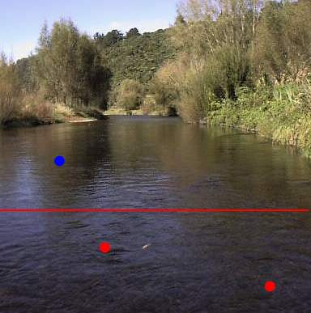

ティップス
キャストの前に 鱒へのアプロ―チ （その３）
三たび、自戒を込めて、鱒たちへのアプロ―チについて。
春の真っ盛り、サクラの花咲く九月に例のトロ場を訪れました。

快晴、時刻は午後２時半、水温は14℃、まずまずの条件で、わずかながらハッチしている小さなメイフライ？も見られましたが、鱒のライズは見あたりません。おおよその見当で、いつも定位しているあたりにキャストするために、静かに近づいていきました。
ところが、渇水気味だったので、鱒は普段より少し上流側にいるだろうと思って近づいてゆくと、私の足からわずか４メートルほど向こう、青●の位置に定位し、頻繁に捕食している青褐色の魚影に気づきました。ついつい近づきすぎたようです。
息を殺して石のように身を固くして見つめていると、徐々に下ってきた鱒は、私の影に気づいたのか、ゆっくり対岸側に移動しながらさらに下ったのち、今度は上流に移動を始め、とうとう見えなくなりました。
今立っている位置まで近づく前に、数回キャストしてみるべきでしたが、後の祭りでした。
その後、シラミツブシに上流側のポイントを探りましたが、とうとうその鱒は現れませんでした。
さて、その後、１尾も釣れないまま、夕暮れとなり、上流から帰ってきたついでにもう一度あの鱒を狙おうと色気を出して、再度、例のトロ場にやってきました。ほとんどあたりは暗くなり、水面からは大小さまざまなカゲロウがハッチしています。
フライを乾かし、ティペットのよじれを取りながら岸辺に立っていると、私のすぐ目の前、右側の赤●の位置で、ピシッと鋭いライズがありました。
前回、鱒へのアプロ―チ （その２）では、
これまでの体験では、流れが速くなる瀬の中（赤線より下流）に鱒がいたことはあまり無いのですが、
などと知ったかぶりで書いていたのですが、春先の虫の乱舞につられて、鱒が赤線よりはるか下流のこんな瀬の中まで出てきて、頻繁に動きながら虫を捕食しているようです。
あのライズの様子なら、食い気たっぷりだし、しめしめ........と思いつつ、鱒の動きの見当をつけながら、キャストした16番、茶色の無名フライを、中央の赤●の位置で、鱒が、怒ったかのようにバシャッ！とくわえました。
で、その結果は、合わせ切れでした。（泣）
強すぎる合わせといい、鱒の位置の読み違えといい、己の未熟さを改めて思い知らされた春の夕まづめでした。
ティップス 目次へ
サイトマップ
ホームへ
お問い合わせ